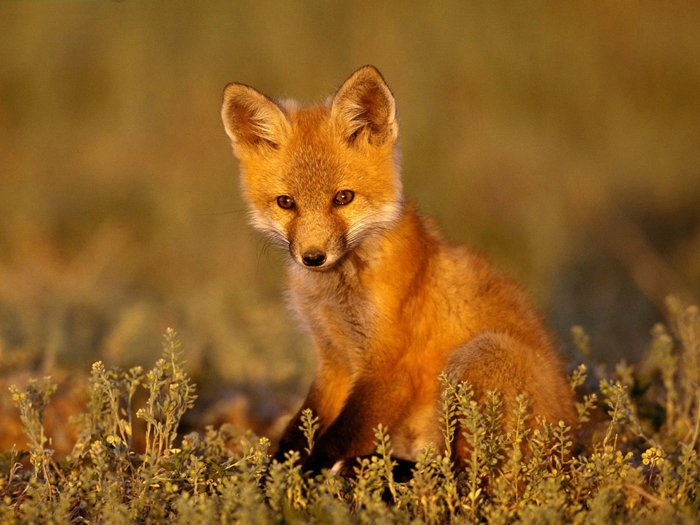

UVA
La uva es la común denominación que reciben los frutos formados en los racimos de la vid. Es usada mundialmente para su fermentación, ya que ésta da lugar al vino. Sembradas en viñas, crecen agrupadas en las parras de las vides entre seis y trescientas uvas por racimo.
UNIVERSO
El Universo es todo lo que podemos tocar, sentir, percibir, medir o detectar. Abarca los cosas vivas, los planetas, las estrellas, las galaxias, las nubes de polvo, la luz e incluso el tiempo. Antes de que naciera el Universo, no existían el tiempo, el espacio ni la materia.
V
VAQUERO
es el encargado de las tareas relacionadas con la ganadería en gran parte de los estados del norte de México.
VIEJA
Voz de cariño que se aplica a los padres, los cónyuges entre sí, etc. 4. persona que tiene ciertas características atribuidas a la vejez El tiempo la ha tratado mal y parece más vieja de lo que realmente es. 5. cosa que está gastado o en mal estado a causa del uso No te pongas esa camisa, está vieja.
VIOLETAS
Esta bonita flor se puede encontrar en gran diversidad de colores (blanco, crema, rosa, lila, púrpura, azul.
W
WASABI
El wasabi es una especia o condimento picante de la cocina japonesa, que se usa a menudo en sushi y otros platos con pescado.
WAFLERA
la Waflera que estás buscando en Falabella.com. Contamos con el respaldo de las mejores marcas como Waflera Cusinart, Home Elements y más.
WIFI
Sistema de conexión inalámbrica, dentro de un área determinada, entre dispositivos electrónicos, y frecuentemente para acceso a internet. Usado también en aposición, y también como femenino
X
XILÓFONO
El xilófono es un instrumento musical de percusión. Cada lámina se afina según un tono específico de la escala cromática. Como se puede afinar, se trata de un laminófono de sonido determinado. El orden de las láminas es similar al orden del teclado de piano.
XANTOFICEAS
Xanthophyta o algas verde-amarillas es un pequeño grupo de algas pertenecientes al filo Ochrophyta, fundamentalmente de aguas continentales y suelo, aunque algunas especies son marinas.
XEROFILO
se aplican en botánica a la vegetación y asociaciones vegetales específicamente adaptadas para la vida en un medio seco. Es decir, plantas adaptadas a la escasez de agua.
Y
YESO
El yeso, como producto industrial y material de construcción, es sulfato de calcio hemihidrato (CaSO4·½H2O),también conocido como yeso cocido o yeso de París.
YOGURT
también conocido como llogur, yogurt, yoghourt, yogourt, yoghurt, yogurth o yagurt - es un producto lácteo obtenido mediante la fermentación de la leche por medio de bacterias de los géneros Lactobacillus y Streptococcus.
YOYO
El yo-yo es un juguete formado por un disco de madera, de plástico o de otros materiales con una ranura profunda en el centro de todo el alrededor de la cual se enrolla un cordón que, anudado a un dedo, se hace subir y bajar alternativamente. Se maneja el disco mediante sacudidas hacia arriba y hacia abajo.
Z
ZAPATO
La palabra zapato parece venir del árabe en euskera hay una palabra muy similar (zapa) que significa pisar, pero parece que es una onomatopeya y no está relacionada con la palabra árabe. De zapato nos llega también: Zapatazo - Golpe dado con el zapato.

ZORRO
Los vulpinos son una tribu de mamíferos carnívoros incluidos en la familia de los cánidos. Se conocen comúnmente como zorros o raposas.
ZANAHORIA
Daucus carota subespecie sativus, llamada popularmente zanahoria, es la forma domesticada de la zanahoria silvestre, también denominadas apiáceas, y considerada la más importante y de mayor consumo dentro de esta familia.


 AVION
AVION
 BALLENA
BALLENA
 CABALLO
CABALLO
 PERRO
PERRO
 QUESO
QUESO
 TELEFONO
TELEFONO